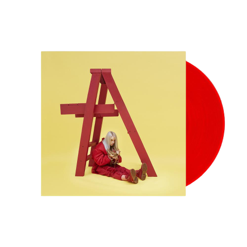
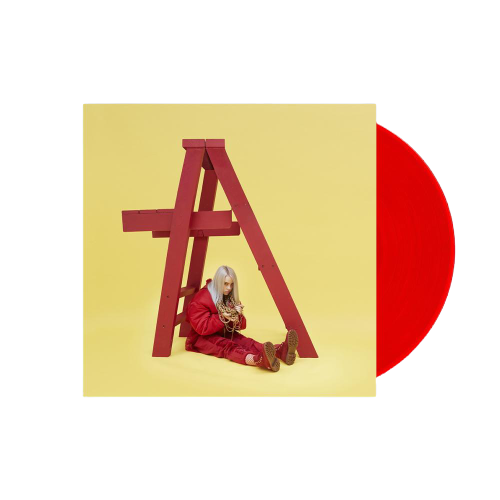

Vinilândia


 

1.1 COPYCAT
1.2 idontwannabeyouanymore
1.3 my boy
1.4 watch
2.1 party favor
2.2 bellyache
2.3 ocean eyes
2.4 hostage
Billie Eilish: dont smile at me
R$ 116,10
Red Vinyl LP pressing. 2017 debut EP from Billie Eilish the girl W Magazine calls Pops Terrifying 15-Year-Old Prodigy. At age eleven Billie began writing and singing her own songs taking after her brother Finneas who was already performing his own songs with his band. Ocean Eyes debut single under the name Billie Eilish was released on SoundCloud in 2016 and became a viral hit. Ocean Eyes was released worldwide through Darkroom and Interscope Records on November 18 2016 to positive critical reviews. Following the success of the Ocean Eyes remixes Eilish released the single Bellyache on February 24 2017. Bellyache was produced and co-written by Finneas OConnell.